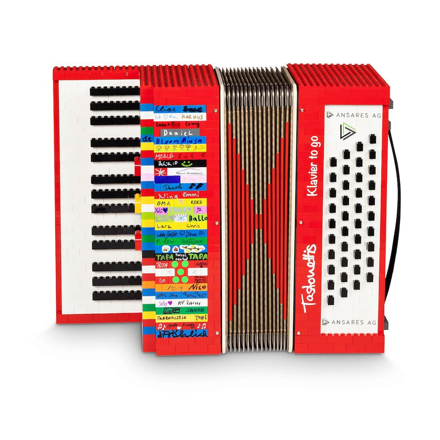

Noch bis Heiligabend, 24.12.2026
–Tage
–Stunden
–Minuten
–Sekunden
Frohe Weihnachten! Die neue CD ist da.
Vier Veröffentlichungen, 42 Titel und unzählige Stunden im Studio – und die nächste CD ist schon in Arbeit.
Noch bis Heiligabend, 24.12.2026
Frohe Weihnachten! Die neue CD ist da.

Weihnachten auf dem Akkordeon: Von „White Christmas“ bis „Süßer die Glocken nie klingen“.
Mit unserer ersten Weihnachts-EP bringen wir Klassiker der Weihnachtszeit auf das „Klavier to go“ – mal besinnlich, mal rockig. Als Zugabe gibt es eine neue Version von „Dancing Queen“.
Ein Jahr nach „Klavier To Go“ legen wir nach: drei neue Titel und zwei Neuaufnahmen.
Mit „Sweet Dreams“, „Dancing Queen“ und „Crazy Little Thing“ kommen drei neue Stücke hinzu. Dazu haben wir unsere Lieblinge „Viva La Vida“ und „Engel“ in einer neuen 2018er-Version aufgenommen.

Zum Drehen ziehen oder die Pfeile nutzen.
Unser großes Album trägt den Spitznamen, den wir unserem Instrument gegeben haben: das „Klavier to go“.
Die CD steckt in einer ganz besonderen Verpackung – einem bunten Akkordeon im Bausteinlook. 19 Titel von Robbie Williams über ABBA und Coldplay bis AC/DC und Rammstein zeigen, was ein Akkordeon-Orchester alles kann.
Sie möchten „Klavier To Go“ im Akkordeon-Look im Regal stehen haben? Bestellen Sie die CD ganz einfach per E-Mail an tastonettis@gmail.com.
CD per E-Mail bestellenUnsere erste CD – aufgenommen im Tonstudio und inzwischen restlos ausverkauft.
Mit „Takt 26“ haben die Tastonettis zum ersten Mal ihr Repertoire auf CD gebannt. Viele der Titel – etwa „Tequila“, „Mamma Mia“ oder „Angels“ – gehören bis heute zu unseren Lieblingsstücken auf der Bühne.
Der Titel von „Klavier To Go“ als Musikvideo – gedreht im Wald, trotz Regen und ganz nach unserem Motto „Lebe das Leben“.

„Klavier To Go“ ist das perfekte Geschenk für alle Akkordeon-, Rock- und Pop-Fans. Schreiben Sie uns – wir kümmern uns um den Rest.